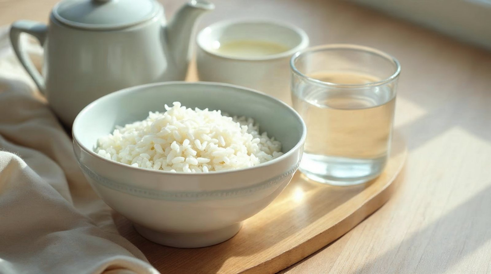
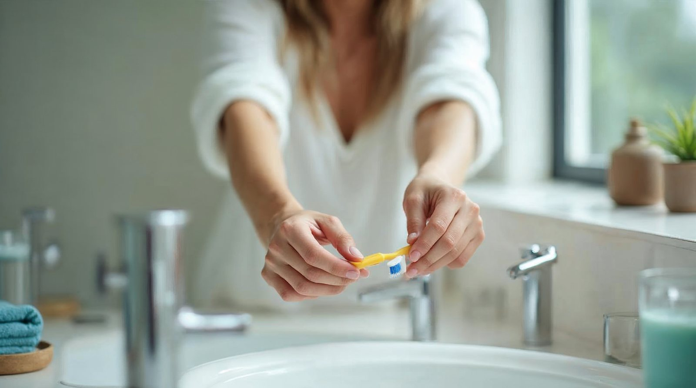
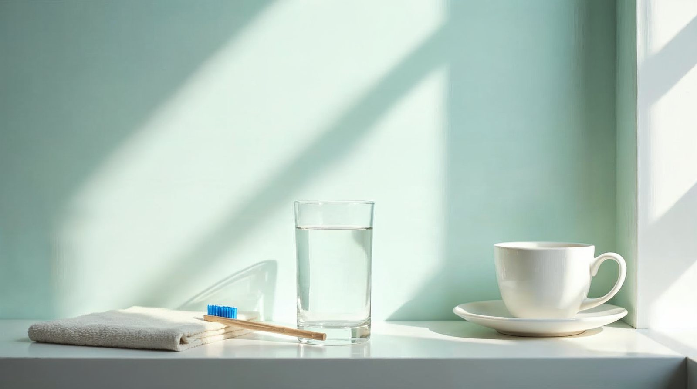
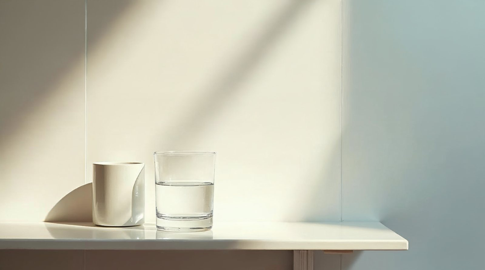
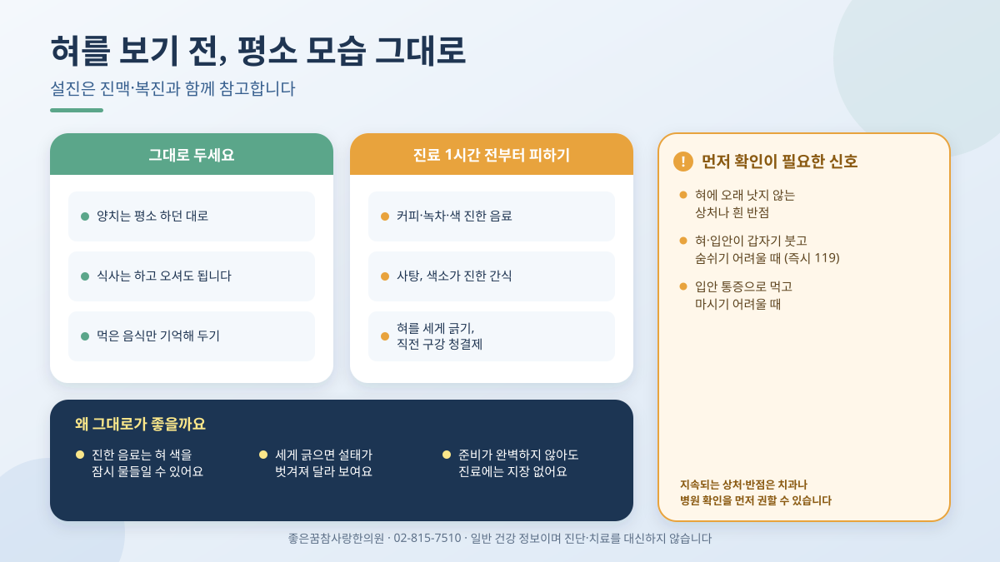

이종호 한의사 감수좋은꿈참사랑한의원 대표원장 (한의사 면허번호 19769)발행 2026-11-23 · 수정 2026-11-26
이 글의 차례
- 왜 방문 직전 행동이 중요할까요
- 혀를 물들이는 음식과 음료는 무엇이 있나요?
- 약과 영양제도 혀 모습에 영향을 주나요?
- 자주 하는 오해
- 왜 혀를 세게 닦으면 평소 모습을 보기 어려울까요?
- 예를 들면 이런 경우입니다
- 먼저 이렇게 여쭙니다
- 일상에서 먼저 해 볼 수 있는 것
- 방문 당일은 시간 순서대로 이렇게 준비해 보세요
- 입마름이 있거나 담배를 피우신다면
- 립스틱, 치아 미백제, 교정 장치는 어떻게 하나요?
- 진료실에서 혀를 볼 때는 이렇게 합니다
- 한의원에서 함께 살필 수 있는 경우
- 스스로 점검해 보세요
- 준비를 못 하고 왔다면 어떻게 하나요?
- 다시 오실 때는 비슷한 조건이 비교에 도움이 됩니다
- 아이와 함께 오실 때 챙길 것
- 왜 평소 모습이 가장 쓸모 있을까요?
- 평소와 달라 보인 날의 사진을 남기려면
- 진료 전에 긴장이 되신다면
- 계절에 따라 달리 챙길 것이 있나요?
- 이렇게 기록해 오시면 상담이 쉬워집니다
- 이런 증상은 먼저 확인이 필요합니다
- 함께 읽으면 좋은 글
한의원 방문 전에는 특별한 준비 없이 평소처럼 양치하고, 진료 직전에만 커피나 카레처럼 혀를 물들이는 음식을 피하시면 충분합니다. 설진은 평소의 혀 모습을 보는 것이어서 방문 직전의 행동이 혀 색에 영향을 줄 수 있기 때문입니다. 이미 드셨다면 무엇을 드셨는지 알려 주시면 그대로 참고합니다.
왜 방문 직전 행동이 중요할까요
- 커피, 녹차, 카레, 사탕, 색소가 진한 음료는 혀 색을 일시적으로 물들일 수 있습니다.
- 혀를 평소보다 세게 긁으면 설태가 벗겨지고 붉게 자극돼 평소 모습과 달라집니다.
- 구강 청결제를 많이 쓰면 입안이 마르고 혀의 물기가 달라 보일 수 있습니다.
- 뜨겁거나 매운 음식을 먹은 직후에는 혀가 평소보다 붉어 보이기도 합니다.
- 그래서 평소와 다른 준비를 하기보다 평소 모습 그대로 오시면 상담에 도움이 됩니다.
혀를 물들이는 음식과 음료는 무엇이 있나요?
진료 전에 피하시면 좋은 것들은 대부분 색이 진하거나 혀에 오래 남는 음식입니다. 흔히 영향을 주는 것들을 정리하면 이렇습니다.
- 커피, 홍차, 진한 녹차는 설태를 누렇거나 갈색으로 보이게 할 수 있습니다.
- 카레, 짜장, 떡볶이처럼 양념 색이 진한 음식은 혀 표면에 색이 남기 쉽습니다.
- 포도나 블루베리 주스, 레드와인은 혀끝과 설태를 보랏빛으로 물들입니다.
- 색소가 든 사탕, 젤리, 탄산음료는 짧은 시간에도 혀 색을 선명하게 바꿉니다.
- 우유, 요구르트는 혀에 하얀 막을 남겨 설태가 두꺼워 보이게 합니다.
이런 음식을 드셨더라도 물로 입을 몇 번 헹구면 상당 부분 옅어집니다. 진료를 미루실 필요는 없고, 드신 것과 시간만 알려 주시면 그 영향을 감안해서 봅니다.
약과 영양제도 혀 모습에 영향을 주나요?
드시는 약 가운데에도 혀 색이나 설태를 달라 보이게 하는 것이 있습니다. 철분제나 일부 위장약은 설태를 어둡게 보이게 할 수 있고, 항생제를 드신 뒤에는 설태 모습이 평소와 달라지기도 합니다. 입을 마르게 하는 약을 드시면 혀의 물기가 줄어 보입니다.
그렇다고 진료를 위해 약을 거르시면 안 됩니다. 평소대로 드시고, 약 이름이나 약 봉투 사진을 가져와 주시면 충분합니다. 드시는 영양제도 함께 알려 주시면 좋습니다.
자주 하는 오해
- 혀를 깨끗이 닦고 가야 잘 보인다고 여기기 쉽지만, 세게 닦으면 설태가 벗겨져 평소 모습을 보기 어렵습니다.
- 커피를 마셨으면 진료를 미뤄야 한다고 생각하기 쉽지만, 마신 음료를 알려 주시면 감안해서 봅니다.
- 혀만 보면 몸 상태를 다 알 수 있다고 여기기 쉽지만, 설진은 문진, 진맥과 함께 보는 참고 자료입니다.
- 휴대전화로 찍은 혀 사진이 진료실에서 본 것과 같다고 생각하기 쉽지만, 조명과 화면 색에 따라 달라 보여 참고로만 씁니다.
왜 혀를 세게 닦으면 평소 모습을 보기 어려울까요?
설태는 하룻밤 사이에도 다시 쌓이는 얇은 막이라, 아침에 세게 긁어 내면 진료 시간까지 평소 두께로 돌아오지 않습니다. 그러면 원래는 설태가 고르게 있는 분도 혀가 맨들맨들하고 붉어 보여, 실제와 다른 모습을 보게 됩니다.
세게 긁은 혀는 표면이 자극돼 군데군데 붉은 점이 도드라지거나 따가움이 남기도 합니다. 이런 모습은 몸 상태라기보다 닦은 흔적이라, 설진에서 얻을 수 있는 단서가 오히려 줄어듭니다.
혀가 텁텁해서 닦고 싶으시다면 부드러운 칫솔로 혀 뒤쪽에서 앞쪽으로 두세 번 가볍게 쓸어 내는 정도로 충분합니다. 평소 혀 클리너를 쓰신다면 진료 당일만큼은 힘을 빼고 한 번만 써 주세요.

예를 들면 이런 경우입니다
- 예를 들어 점심시간에 커피를 마시고 곧바로 오는 직장인이라면, 마신 시간과 종류를 말씀해 주시면 혀 색을 볼 때 감안합니다.
- 예를 들어 사탕이나 색이 진한 음료를 마시며 공부하다 오는 수험생이라면, 오기 전에 물로 입을 한 번 헹구는 정도면 충분합니다.
- 예를 들어 틀니를 쓰시거나 입이 자주 마르는 어르신이라면, 평소 입마름이 심한 시간대와 드시는 약을 함께 여쭙습니다.
먼저 이렇게 여쭙니다
- 오시기 전에 마지막으로 드신 음식과 음료는 무엇인가요?
- 양치는 언제 하셨고, 혀도 닦으셨나요?
- 평소 입안이 마르거나 텁텁한 편인가요?
- 복용 중인 약이 있나요?
- 최근 감기약이나 항생제를 드신 적이 있나요?

일상에서 먼저 해 볼 수 있는 것
- 진료 1시간 전부터는 커피, 녹차, 사탕, 색이 진한 음료 피하기
- 양치는 평소 하던 방식대로 하고 혀를 세게 긁지 않기
- 구강 청결제는 진료 직전에 쓰지 않기
- 식사는 하고 오셔도 되며, 먹은 음식을 기억해 두기
방문 당일은 시간 순서대로 이렇게 준비해 보세요
- 전날 밤: 늦은 야식과 과음은 줄이고, 평소처럼 주무세요. 잠을 설치면 다음 날 혀가 말라 보이기 쉽습니다.
- 당일 아침: 양치는 평소대로 하고 혀는 가볍게만 닦습니다. 식사도 평소처럼 하셔도 됩니다.
- 출발 1시간 전: 커피, 녹차, 사탕, 색이 진한 음료는 잠시 미뤄 두세요.
- 도착 직후: 물로 입을 한두 번 헹구고, 직전에 드신 것이 있으면 접수 때 기억해 두세요.
이 순서를 다 지키지 못하셔도 괜찮습니다. 바쁜 날에는 드신 것을 기억해 두시는 것 하나만으로도 충분히 도움이 됩니다.
입마름이 있거나 담배를 피우신다면
평소 입이 자주 마르는 분은 진료를 기다리는 동안에도 혀가 말라 보일 수 있습니다. 물을 한두 모금 마셔 입안을 적셔 두시면 좋고, 입마름이 하루 중 언제 심한지 알려 주시면 그 흐름을 함께 봅니다.
담배를 피우시는 분은 설태가 누렇거나 어둡게 보이기 쉽습니다. 진료 직전 흡연은 혀 색과 맥에 함께 영향을 줄 수 있어, 가능하다면 오시기 1시간 전부터는 미뤄 두시고 평소 흡연량을 말씀해 주세요.
구강 청결제를 자주 쓰시는 분은 쓰는 횟수도 함께 알려 주세요. 알코올이 든 제품은 입안을 마르게 해 혀의 물기를 달라 보이게 할 수 있습니다.
립스틱, 치아 미백제, 교정 장치는 어떻게 하나요?
진한 립스틱은 혀 색을 볼 때 주변 색이 눈에 섞여 보일 수 있어, 불편하지 않다면 가볍게 닦아 주시면 좋습니다. 꼭 지우지 않으셔도 진료는 가능하니, 편한 대로 오시면 됩니다.
치아 교정 장치나 틀니가 있으면 혀 가장자리에 자국이나 쓸린 자리가 생기기 쉬워, 그 사실을 미리 말씀해 주세요. 틀니는 평소처럼 끼고 오셔도 되고, 평소 언제 빼 두시는지도 함께 알려 주세요.

진료실에서 혀를 볼 때는 이렇게 합니다
- 입을 편하게 벌리고 혀를 힘 빼고 앞으로 내밀어 주시면 됩니다. 혀에 힘을 세게 주면 색과 모양이 평소와 달라 보일 수 있습니다.
- 혀를 오래 내밀고 있으면 혀가 붉어지기 쉬워, 몇 초씩 짧게 나누어 봅니다.
- 필요하면 혀끝을 들어 혀 아랫면의 핏줄 모습도 함께 봅니다.
- 진한 립스틱이나 립글로스는 혀 색을 볼 때 눈에 영향을 줄 수 있어, 불편하지 않다면 가볍게 닦아 주셔도 좋습니다.
- 다음 진료 때도 진료실에서 다시 보며 지난번 모습과 비교합니다.

한의원에서 함께 살필 수 있는 경우
- 입안이 건조하고 목이 자주 마를 때 수분 섭취와 생활 습관을 함께 여쭙니다.
- 입냄새와 속 더부룩함이 같이 있을 때 소화와 식사 시간을 함께 살핍니다.
- 직전에 색이 진한 음식을 드셨다면 그 사실을 반영해서 혀를 봅니다.
좋은꿈참사랑한의원에서는 먼저 불편한 점을 충분히 듣고, 진맥을 기본으로 하고 필요하다고 판단될 때 설진을 복진과 함께 참고합니다. 준비가 완벽하지 않아도 진료에는 지장이 없으며, 상태에 맞춰 침이나 한약 상담 등 방법을 정합니다.
첫 방문에는 문진으로 불편한 점과 함께 잠, 소화, 배변, 몸의 온기를 먼저 여쭙고, 진맥으로 몸 상태를 살핍니다. 이어서 혀를 편하게 내밀어 주시면 색과 설태, 가장자리 모습을 짧게 보고, 필요하다고 판단되면 복진이나 장비 확인을 더합니다.
적어 오신 생활 기록과 함께 보며 지금 상태를 설명하고 치료 방향을 정합니다. 혀를 보는 시간은 길지 않으니 부담 갖지 않으셔도 됩니다.
스스로 점검해 보세요
- 진료 1시간 안에 커피, 녹차, 카레, 사탕을 먹었다
- 오늘 아침 혀를 평소보다 세게 닦았다
- 진료 직전에 구강 청결제를 썼다
- 입안이 마르거나 텁텁한 느낌이 평소보다 심하다
- 최근 감기약이나 항생제를 먹었다
- 혀에 2주 넘게 낫지 않는 상처나 반점이 있다
해당하는 항목이 있다면 진료를 시작할 때 말씀해 주세요. 그 사실을 감안해서 혀를 봅니다.
준비를 못 하고 왔다면 어떻게 하나요?
진료가 갑자기 잡혀서 커피를 마시고 왔거나, 아침에 혀를 세게 닦고 오셨다고 걱정하실 필요는 없습니다. 그 사실을 말씀해 주시면 저는 그 영향을 감안해서 혀를 보고, 필요하면 다음 진료 때 다시 한번 비교합니다.
설진은 진맥과 문진에 더하는 참고 단서라, 혀가 평소와 조금 달라 보인다고 해서 진료 전체가 흔들리지는 않습니다. 준비보다 중요한 것은 지금 불편한 점을 편하게 말씀해 주시는 일입니다.
다시 오실 때는 비슷한 조건이 비교에 도움이 됩니다
설진은 한 번보다 여러 번 이어 볼 때 쓸모가 커집니다. 그래서 다시 오실 때는 처음 오셨을 때와 비슷한 시간대에, 비슷한 식사 뒤에 오시면 혀 모습을 비교하기가 한결 쉬워집니다.
예를 들어 처음에는 점심 직후에 오셨는데 다음에는 아침 공복에 오시면, 설태 두께가 달라 보이는 것이 몸의 변화인지 시간 차이인지 가리기 어렵습니다. 매번 맞추기 어렵다면 그날 언제 무엇을 드셨는지만 알려 주셔도 충분합니다.
아이와 함께 오실 때 챙길 것
아이는 어른보다 먹은 것이 혀에 쉽게 남고, 혀를 오래 내밀고 있기도 어려워합니다. 오시는 길에 사탕이나 색이 진한 음료를 주셨다면 물로 한 번 헹구게 해 주시고, 무엇을 먹었는지 알려 주세요.
혀를 내미는 것을 낯설어하는 아이라면 집에서 거울을 보며 "메롱" 하고 혀를 내밀어 보는 놀이를 한두 번 해 보시면 진료실에서 한결 편하게 따라 합니다. 감기로 코가 막혀 있다면 그 사실도 함께 말씀해 주세요.
왜 평소 모습이 가장 쓸모 있을까요?
설진에서 보고 싶은 것은 특별히 준비한 혀가 아니라 평소 생활이 그대로 묻어 있는 혀입니다. 평소의 식사, 잠, 수분이 혀에 남긴 흔적을 보아야 생활 이야기와 이어서 생각할 수 있기 때문입니다.
그래서 잘 보이려고 애쓰시기보다 평소처럼 지내다 오시는 것이 가장 좋은 준비입니다. 혀를 깨끗하게 만들어 오셔야 한다는 부담은 내려놓으셔도 됩니다.
평소와 달라 보인 날의 사진을 남기려면
혀가 평소와 달라 보인 날이 있어 보여 주고 싶으시다면, 그날 찍은 사진 한두 장과 함께 비교할 평소 사진도 한 장 있으면 좋습니다. 둘 다 아침 창가의 자연광에서 플래시 없이, 비슷한 거리에서 찍어 주세요.
사진만으로는 색이 실제와 다를 수 있어 진료실에서 직접 보는 모습을 기준으로 삼지만, 평소와 비교한 사진은 어떤 점이 달라 보였는지 이야기를 꺼내는 데 큰 도움이 됩니다. 찍은 날짜와 그 전날 생활을 한 줄 적어 두시면 더 좋습니다.
진료 전에 긴장이 되신다면
처음 오는 곳이라 긴장하시는 분이 많습니다. 긴장하면 입이 마르고 혀에 힘이 들어가 평소와 달라 보이기도 합니다. 도착하시면 잠시 앉아 물 한 모금 드시고 숨을 고르시면 됩니다. 혀를 보는 일은 몇 초면 끝나니 마음 편히 오세요. 궁금한 점은 메모해 오시면 진료 중에 하나씩 여쭤 보실 수 있습니다.
계절에 따라 달리 챙길 것이 있나요?
겨울에는 난방으로 실내가 건조해 입안과 혀가 쉽게 마릅니다. 찬바람을 맞으며 오신 직후에는 혀 색이 평소보다 옅어 보이기도 해서, 실내에서 몸을 잠시 녹인 뒤에 봅니다.
여름에는 오시는 길에 찬 음료나 빙과를 드시는 경우가 많습니다. 찬 것을 먹은 직후에는 혀가 일시적으로 창백해 보일 수 있어, 드셨다면 그 사실을 알려 주세요. 땀을 많이 흘리고 오셨다면 물을 조금 드시고 쉬신 뒤에 보면 됩니다.
이렇게 기록해 오시면 상담이 쉬워집니다
- 방문 전 마지막 식사와 음료, 그 시간
- 복용 중인 약 이름(사진도 좋습니다)
- 평소 입안이 마르거나 텁텁한 시간대
- 혀에 신경 쓰이는 모습이 있다면 언제부터인지
- 평소와 달라 보인 날의 혀 사진(있다면 참고용)
이런 증상은 먼저 확인이 필요합니다
- 혀에 오래 낫지 않는 상처나 흰 반점이 있는 경우
- 혀나 입안이 갑자기 붓고 숨쉬기 어려운 경우(즉시 응급실)
이런 신호가 있으면 한의원보다 가까운 병원이나 응급실을 먼저 찾으세요.
함께 읽으면 좋은 글

여쭙는 것
- 오시기 전에 마지막으로 드신 음식과 음료는 무엇인가요?
- 양치는 언제 하셨고, 혀도 닦으셨나요?
- 평소 입안이 마르거나 텁텁한 편인가요?
생활에서 해 볼 것
- 진료 1시간 전부터는 커피, 녹차, 사탕, 색이 진한 음료 피하기
- 양치는 평소 하던 방식대로 하고 혀를 세게 긁지 않기
- 구강 청결제는 진료 직전에 쓰지 않기
한의원에서 함께 살필 것
- 입안이 건조하고 목이 자주 마를 때 수분 섭취와 생활 습관을 함께 여쭙니다.
- 입냄새와 속 더부룩함이 같이 있을 때 소화와 식사 시간을 함께 살핍니다.
- 직전에 색이 진한 음식을 드셨다면 그 사실을 반영해서 혀를 봅니다.
먼저 확인이 필요한 신호
- 혀에 오래 낫지 않는 상처나 흰 반점이 있는 경우
- 혀나 입안이 갑자기 붓고 숨쉬기 어려운 경우(즉시 응급실)
한눈에 보는 표
| 구분 | 핵심 |
|---|---|
| 여쭙는 것 | 오시기 전에 마지막으로 드신 음식과 음료는 무엇인가요? 양치는 언제 하셨고, 혀도 닦으셨나요? |
| 생활에서 해 볼 것 | 진료 1시간 전부터는 커피, 녹차, 사탕, 색이 진한 음료 피하기 양치는 평소 하던 방식대로 하고 혀를 세게 긁지 않기 |
| 한의원에서 함께 살필 것 | 입안이 건조하고 목이 자주 마를 때 수분 섭취와 생활 습관을 함께 여쭙니다. 입냄새와 속 더부룩함이 같이 있을 때 소화와 식사 시간을 함께 살핍니다. |
| 먼저 확인이 필요한 신호 | 혀에 오래 낫지 않는 상처나 흰 반점이 있는 경우 혀나 입안이 갑자기 붓고 숨쉬기 어려운 경우(즉시 응급실) |
자주 묻는 질문
양치를 하지 않고 가야 하나요?
아닙니다. 평소 하던 대로 양치하고 오셔도 됩니다.
방금 커피를 마셨는데 다음에 다시 와야 하나요?
그럴 필요 없습니다. 마신 음료를 알려 주시면 참고하며 살핍니다.
혀를 내밀 때 힘을 줘야 하나요?
편하게 내미는 정도면 충분합니다.
혀 사진을 찍어 가야 하나요?
꼭 필요하지는 않습니다. 평소와 달라 보인 날의 사진이 있다면 참고로 보여 주셔도 됩니다.
혀를 보면 무엇을 알 수 있나요?
혀의 색과 설태, 모양은 잠과 소화, 몸의 온기 같은 상태를 여쭙는 단서가 됩니다. 혀 하나로 판단하지 않고 문진과 진맥을 함께 봅니다.
아이와 함께 가는데 아이 혀도 준비가 필요한가요?
어른과 같습니다. 오기 직전 사탕이나 색이 진한 음료만 피하고, 먹었다면 알려 주시면 됩니다.
좋은꿈참사랑한의원은 재진 때 지난번 이야기부터 이어서 여쭙니다. 진료시간과 예약은 오시는 길에서 확인하세요.
어디서 상담받을 수 있나요?
좋은꿈참사랑한의원은 서울 동작구 만양로2길 2 신성빌딩 3층·5층(서울 동작구 상도동, 7호선 상도역 3번 출구 근처)에 있습니다. 한의사 3명(이종호 대표원장, 조영기 수석진료원장, 정원영 진료원장)이 진료합니다. 진료시간은 평일 09:30~20:00(점심 13:00~14:00), 토·일·공휴일 09:30~15:00이며, 방문 전 전화로 확인을 권합니다. 예약은 네이버 예약, 카카오톡 상담, 전화 02-815-7510로 받습니다.
이 글은 일반적인 건강 정보이며 개인의 진단이나 치료를 대신하지 않습니다. 증상이 있거나 복용 중인 약이 있다면 진료를 통해 확인하세요. 치료 효과는 개인마다 다를 수 있습니다.
작성 기준: 일반적으로 알려져 있는 건강 정보를 참고해 정리했습니다(대표원장 감수). 증상 기록은 1~2주 동안 하루 1회, 비슷한 시간에 적어 오시면 지난 상태와 비교하기 쉽습니다.